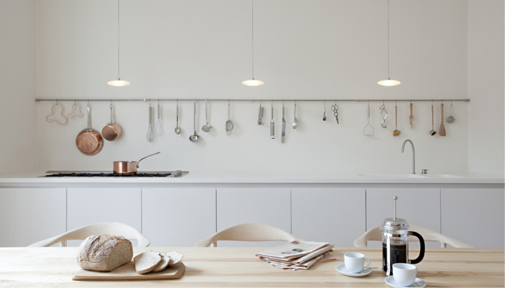

Осознанная кухня

Основные правила:
Правило №1
Натуральные продукты
Правило №2
Переработанные материалы
Правило №3
Многоразове использование
Важно!
*Осознанная кухня включает себя правила использования свежих, натуральных продуктов и умеренности потреблении.
Лайфхаки по zero waste в кухне.
Осознанная кухня - это не только способ приготовления пищи, но и образ жизни, сосредоточенный на заботе о себе, окружающей среде и экономии ресурсов. В этой статье мы рассмотрим лайфхаки, которые помогут вам приготовить здоровую и вкусную пищу, избежать излишков и сократить отходы пищи, а также сделать вашу кухню более экологически чистой.
Используйте натуральные продукты
Одним из главных правил zero waste является использование натуральных продуктов. Например, можно заменить обычные, ядовитые моющие средства на натуральные, такие как уксус или сода. Они экологичны и безопасны для здоровья.
Используйте переработанные материалы
Другим способом уменьшения отходов в кухне является использование переработанных материалов. Мы предлагаем использовать различные предметы из переработанных материалов, таких как бумага, стекло и металл. Например, можно использовать стеклянные банки для хранения продуктов, а также металлические ложки и вилки вместо пластиковых.
Используйте многоразовые пакеты
Одним из основных источников отходов в кухне являются пакеты для хранения продуктов. Мы предлагаем использовать многоразовые пакеты для хранения продуктов вместо одноразовых. Также можно использовать покрытые воском ткани, которые заменят пластиковые пакеты.
Собирайте компост
Еще один способ уменьшения отходов в кухне — сбор компоста. Мы предлагаем использовать специальные контейнеры для сбора органических отходов, таких как фрукты, овощи и остатки еды. Затем можно использовать этот компост в качестве удобрения для растений.